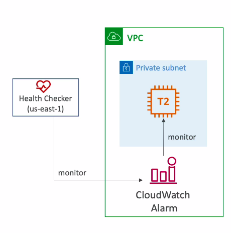

🌿 What? §
- Định nghĩa cách Route 53 phản hồi những câu truy vấn DNS.
- Đừng nhầm lẫn từ routing
- Không giống routing của ALB, đấy là định tuyến lưu lượng truy vấn.
- Routing của Route 53 chỉ chịu trách nhiệm phản hồi những truy vấn DNS thôi.
🌿 Types §
- Có những loại policies sau:
🃠Simple §
- Tiêu biểu, định tuyến tới một resource đơn lẻ.
- Có thể chỉ định nhiá»u values cho một record.
- Nếu có nhiá»u values trả vá», client sẽ pick ngẫu nhiên một value để thực hiện truy cáºp.
- Khi báºt Alias, phải chỉ định tới một resouce duy nhất.
- Không liên quan tới Health Check.
🃠Weighted - tỉ trá»ng §
- Kiểm soát phần trăm nháºn requests được chỉ định cho từng resource.
- Các DNS records phải cùng tên và cùng kiểu.
- Có liên quan đến Health Check
- Use cases: Load balancing giữa các region, testing version mới của ứng dụng, …
- Assign 0% cho một record, tức là resource đó sẽ không được gá»i traffic.
- Nếu tất cả record được set = 0, thì sẽ trả vá» trá»ng số bằng nhau cho tất cả các records.
🃠Latency based §
- Chuyển hướng tới resource có độ trễ thấp nhất đối với client. Phù hợp với những ứng dụng mà độ trễ được ưu tiên.
- Vd client ở Việt Nam thì sẽ được điá»u hướng tới resouce đặt tại Singapore(Nếu ở đấy có độ trễ thấp nhất.)
- Có Health check(để thực hiện chuyển đổi dự phòng)
🃠Failover §
- Tự động chuyển đổi dự phòng tới các instance healthy nếu primary instance được đánh giá là unhealthy.
🃠Geolocation §
- Khác với Latency(ở gần chưa chắc đã có độ trễ thấp nhất).
- Dựa và o vị trà của user để định tuyến.
- Nên tạo một default record(sẽ được sá» dụng trong trường hợp không tìm được vị trà phù hợp)
- Usage: web định vị(kiểu baemin, ở đâu thì xác định vị trà gần để giao hà ng cho nóng), giới hạn phân phối nội dung tới từng khu vực, load balancer, …
- Có thể kết hợp với Health Check
🃠Geoproximity Route §
- Vẫn dựa và o vị trà của user và resouce, nhưng thằng nà y có khả năng điá»u chỉnh lượng traffic tới resouce bằng thông só bias. Set bias cà ng cao thì tỉ lệ traffic đổ vá» cà ng lớn.
🃠Multi-value §
- Dùng khi muốn định tuyến traffic tới nhiá»u resources.
- Có thể kết hợp với Health Checks( sẽ chỉ trả vỠcác values/resources healthy)
- Tối đa trả vỠ8 values healthy cho từng query.
- Multi-Value không thay thế cho một ELB.
- Nó khác với Simple, vì nó có health checks, Simple trả vá» nhiá»u values nhưng có thể trong đó có unhealthy value.
🌿 Health Check §
- HTTP Health Check chỉ sỠdụng để check cho các public resources.
- Health Check => Tự động chuyển đổi dự phòng nếu phát hiện ra unhealth resource.
- Health Check được kết hợp với CW(CloudWatch) metrics.
- Có 3 kiểu health check:
🃠Monitor on endpoint §
- Có khoảng 15 health checkers sẽ check health endpoint
- Ngưỡng health/unhealthy mặc định = 3
- 30s gá»i check một lần ( có thể set xuống 10s nhưng phà đắt hơn)
- Hỗ trợ giao thức: HTTP, HTTPS và TCP
- Nếu > 18% health checkers báo cáo là healthy thì Route 53 sẽ đánh giá nó là healthy và ngược lại.
- Chỉ check pass với các responses có code là 2XX và 3XX
- Có thể đánh giá Health dựa trên 5120 bytes đầu tiên của response.
- Phải config route/firewall cho phép nháºn requests từ Route 53 để Health Check.
🃠Calculated health checks §
- Kết hợp kết quả của nhiá»u health check con cho một healthcheck cha, để đánh giá tình trạng sức khá»e của resource.
- Có thể sỠdụng AND, OR, NOT
- Có thể set max 256 health check con.
- Chỉ định số lượng health check con pass là bao nhiêu để health check cha pass.
- Usage: thực hiện bảo trì.
🃠Private Hosted Zones §
- Route 53 thực hiện health check từ bên ngoà i VPC.
- Do không thể truy cáºp trực tiếp tới các private endpoints, nên cần phải tạo CloudWatch và Route 53 đọc metrics của CW để đánh giá trình trạng sức khá»e của resources.

🌿 Domain Registar & DNS Service §
- Bạn có thể mua hoặc đăng ký tên miá»n ở chỗ khác và sá» dụng DNS Service ở chỗ khác để quản lý.
- Tạo Hosted Zone trên Route 53
- Update NS record ở bên thứ 3(vd GoDaddy) sỠdụng Route 53 Name Server.
- Domain Registar != DNS Service